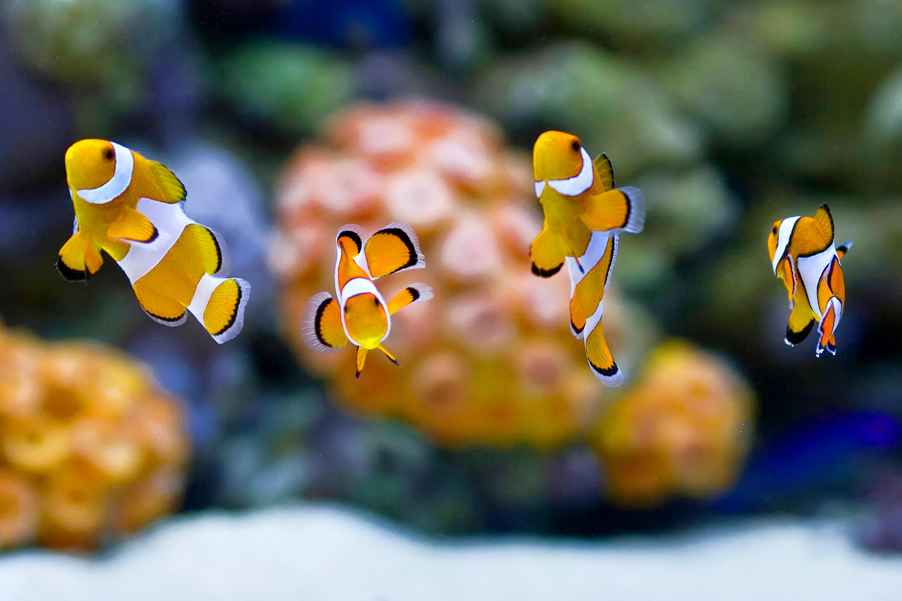

Marine Species Exploration
Discover the fascinating world of marine creatures — from vibrant coral reefs to majestic whales.

Coral Reefs: Colorful marine structures formed by tiny polyps that support a vast ecosystem.

Clownfish: Small, brightly colored fish often found in sea anemones for protection.

Whale: The largest mammals on Earth, known for their intelligence and long migrations.
Species Information Table
| Species Name | Habitat | Diet | Behavior |
|---|---|---|---|
| Coral | Marine (Reef) | Photosynthetic Algae (Symbiosis) | Passive |
| Clownfish | Reef | Omnivore (Plankton, Algae) | Peaceful |
| Whale | Deep Sea | Varies (Krill or Predatory) | Gentle (Generally) |
Top 3 Marine Species Loved by Ocean Researchers
- Blue Whale
- Giant Squid
- Mandarinfish
Learn more from the Marine Institute.